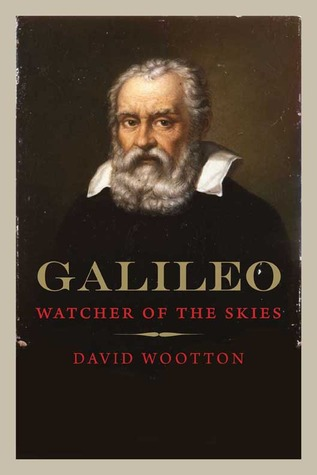

Galileo: Watcher of the Skies
Reseña por Jorge I. Zuluaga

Ver detalles · Ver reseña en GoodReads (necesita cuenta)
Como su autor lo señala, "Galileo: watcher of the skies" es una biografía de la obra científica de Galileo Galilei. Más que concentrarse en eventos específicos de la vida del matemático pisano (pisano, no florentino como siempre quiso presentarse el mismo Galileo, en una muestra de esnobismo de la época), la obra hace un recorrido por el proceso de maduración de las ideas con las que revolucionó para siempre la física y la ciencia en general.
Naturalmente, como esas ideas se incubaron en un contexto personal y social específico, el libro presenta también una descripción de algunos de los más importantes eventos de la vida personal de Galileo; pero, más importante aún, hace un interesante análisis de las relaciones que mantuvo a lo largo de su vida con algunas personas clave: su padre, su madre (¡qué joyita!), su hermano (¡qué hermano!, ¡terrible!), sus amigos intelectuales Sagredo, Salviati, Castelli, sus discípulos y, finalmente, pero no menos importante, su hija Maria Celeste.
Para quienes estén más interesados por los detalles personales, esas descripciones y análisis ayudan a conocer mejor a un Galileo de carne y hueso al que yo, después de haber leído dos o tres biografías íntimas del personaje, no conocía realmente.
El libro se divide en capítulos relativamente cortos (cuatro o cinco páginas) que exponen un tema particular: la lámpara de Galileo, la torre inclinada, ver es creer, nudismo, inercia, madre, el científico católico, etc. No saben lo que agradezco yo (y espero les pase también a ustedes) que un autor o autora piense en eso al componer un libro. Los capítulos cortos no solo permiten que el libro pueda ser leído de a poco, como un texto de mesa de noche, sino que además te ofrecen pequeños premios como lector y te dan un sentido de avance que no sientes en libros con capítulos de veinte o treinta páginas.
Uno de los elementos más destacados de esta biografía es la introspección (¿o "extrospección"?) que hace el autor de algunos de los aspectos centrales de la obra y, como ya dijimos, de la vida personal de Galileo. Me refiero al esfuerzo de reconstruir, a partir de sus cartas y libros (que el autor parece haber leído en su totalidad y en la lengua original, el toscano de los años 1600), algunos aspectos de la obra y la vida de Galileo que no son explícitos. ¿Cuándo empezó Galileo a ser un copernicano convencido? ¿Era Galileo en realidad un creyente devoto o un católico oportunista y por defensa propia? ¿Por qué suspendió algunos de sus trabajos más relevantes por tantos años antes de terminarlos y retomarlos en los últimos diez años de su vida? ¿Cuál fue el impacto que tuvo en su vida y obra la influencia de su padre, un artista antipitagórico pero experimentalista en el sentido moderno de la palabra? ¿Cuál fue el impacto que tuvo la relación con su madre? (lamentablemente, también en este libro las mujeres no salen muy bien libradas y, creo yo, por culpa del machismo estructural del que también sufre la visión del autor). ¿Fue Galileo un verdadero representante de la ciencia experimental, su fundador, como muchos lo señalan, o realmente fue en la aproximación a la naturaleza más cercano a Aristóteles, al que combatió siempre? ¿Cuáles eran las concepciones cosmológicas de Galileo? ¿Eran tan ingenuas como muchos señalan? ¿Qué papel jugó en su vida su necesidad de asegurarse una comodidad económica de la que no gozó durante buena parte de su existencia y cómo eso afectó su relación con la ciencia? ¿Fue realmente Galileo un buen cortesano, como muchos autores señalan, o en realidad su rebeldía nunca le permitió encajar en los círculos de poder y fue por eso que terminó su vida encerrado?
Antes de leer esta biografía, en mis clases y conferencias de física y astronomía hablaba de Galileo usando descripciones como: Galileo fue un gran físico y solo un modesto astrónomo; Galileo era un fervoroso creyente católico y su idea de que la naturaleza era un libro escrito en caracteres matemáticos seguro producía en él, como creyente, una disonancia cognitiva que lo habría hecho sufrir toda la vida; Galileo no quiso enviarle un telescopio a Johannes Kepler por temas de celo profesional; Galileo era de una familia acomodada y siempre tuvo las mejores oportunidades de su época; el experimento de la torre inclinada de Pisa es una historia apócrifa; Galileo fue un gran experimentalista; Galileo fue condenado por la Inquisición por burlarse del papa en sus libros; Galileo fue perseguido por la Iglesia siempre y el cardenal Barberini fue su peor enemigo; y así un largo etcétera.
Después de leer "Galileo: Watcher of the Skies", ahora sé que muchas de esas afirmaciones están entre lo impreciso y lo incorrecto, y me alegra conocer, a través del juicioso análisis de David Wootton, una versión de Galileo más rica y más profunda. Tampoco definitiva. Soy consciente de que la historiografía es una ciencia y que las hipótesis para explicar un enfoque en un libro, una frase en una carta o un evento de la vida de un personaje pueden ir y venir, y algunas serán, a la luz de la evidencia, mejores que otras. Pero leer una nueva biografía, y en especial una biografía tan rica como esta, te da mejores elementos fácticos e interpretativos para entender figuras intelectuales como la de Galileo Galilei.
Lo único malo de esta biografía es que está en inglés. A todas las personas que leen en esa lengua como si leyeran su lengua materna, las felicito. Yo llevo casi 30 años estudiando el idioma (empecé en la adolescencia, como muchos de mi generación), más 20 años usando el inglés en mi vida cotidiana como académico y más de 15 escribiendo en esa lengua artículos científicos (lo único que siento ha incrementado mis habilidades en la lengua); aun así, después de leer un libro como este, puedo asegurarles que me perdí de entender el 10% del contenido al no estar escrito en mi lengua materna. ¡Qué le vamos a hacer! Larga vida a los y las traductoras.
Finalmente, me encontré con datos curiosos y tan originales en la biografía que decidí hacer este hilo en Twitter, primero para recordarlos y, segundo, para animarlos a conocer más sobre Galileo.
Descubrí en esta biografía un Galileo más humano, pero también descubrí un Galileo aún más genial, aún más revolucionario de lo que habría pensado. Todo esto no ha hecho más que incrementar mi admiración por él.